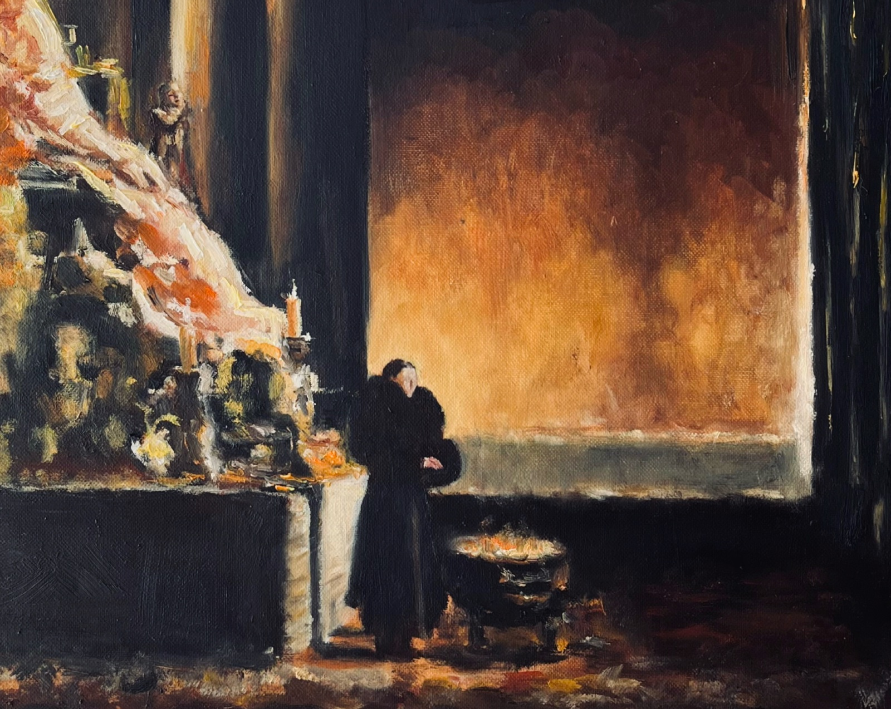
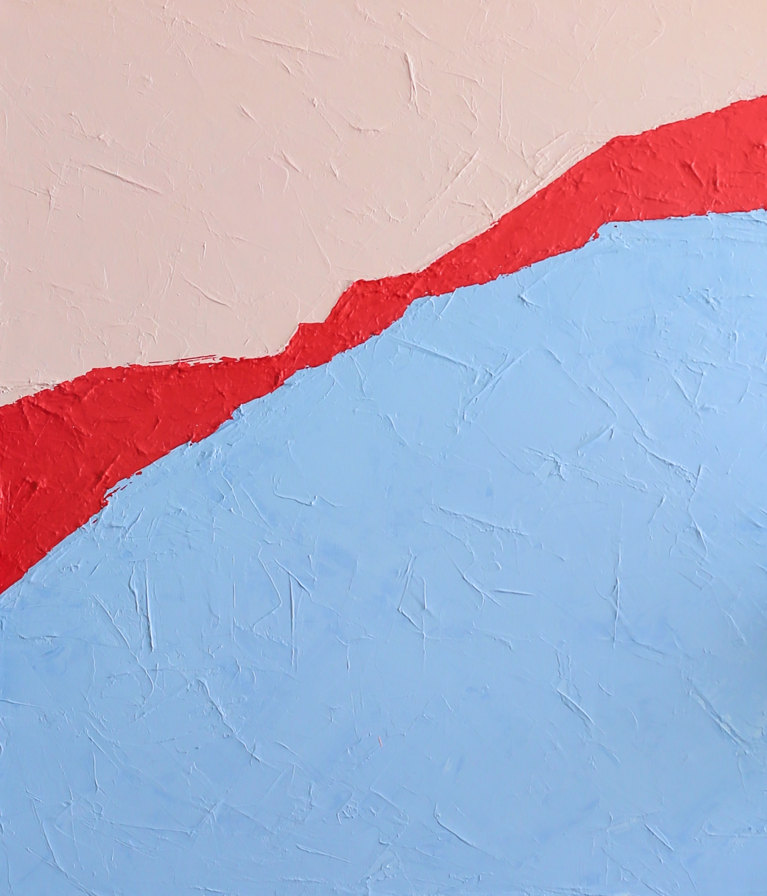
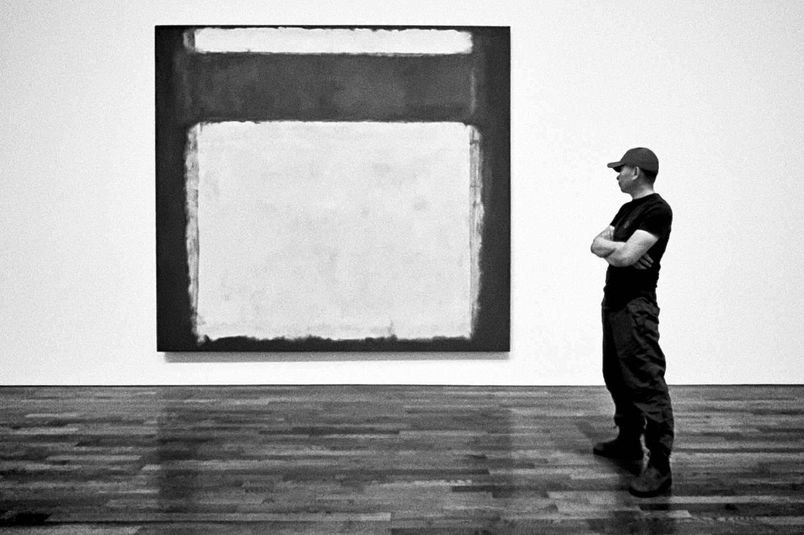

Colour, the rhythm. Emotion, the form. Feeling, the only truth.
 Ethereal
Ethereal

Narrative Chromatic
Chromatic
 Atmospheric
Atmospheric

Geometric大音希聲 大象無形
The greatest form casts no shadow.
I have nothing to say, and I am saying it.
Colour, the rhythm. Emotion, the form. Feeling, the only truth.
Ethereal

Narrative
Chromatic
Atmospheric

GeometricWhat is removed defines what remains, earns place, or does not.
 Identity
Identity
To make is to understand. This is how I read the world.

Colour as presence. Silence as weight. What moves me shapes what I make.
Zen aesthetics, wabi-sabi, 間 (ma). The meaningful pause between things. The space between the sword strokes. The silence between the notes.
KENDO · 剣
Producing · 樂
Industrial and ambient. Sound as architecture. Texture without decoration, weight without excess. Emotion without announcement.